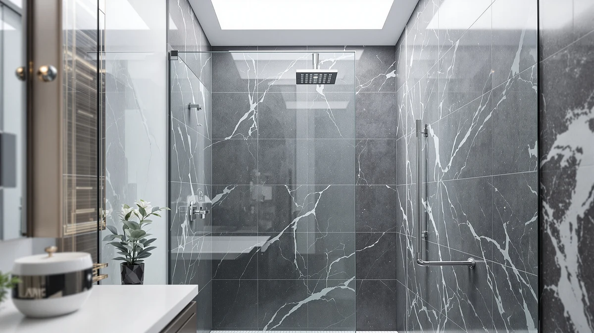

Shower Door Finish Guide (2026): Black vs Chrome vs Brushed Nickel
Prices and picks verified as of August 2026. Independent, reader-supported reviews.


Things to Know Before You Buy
- Matte black and other painted or powder-coated finishes hide water spots better than polished chrome, but they show fingerprints on handles more readily.
- Chrome remains the most widely stocked finish, so replacement hardware and matching accessories are easier to find than for black or gold doors.
- Brushed nickel and brushed gold have a dull, textured sheen that masks smudges and hard water residue better than a mirror-polished finish.
- PVD-coated and stainless steel finishes resist scratching, peeling, and corrosion far longer than paint or basic anodized coatings.
This shower door finish guide compares matte black, chrome, and brushed nickel hardware so you can match a new door to the fixtures already in your bathroom. Manufacturers build these finishes over an aluminum or stainless steel frame using different processes, from wet paint to physical vapor deposition, and that process determines how well the finish holds up against steam, hard water, and daily fingerprints. Pick the right one and the door looks like it was built into the room. Pick the wrong one and it clashes with your faucet every time you shower.
Finish matters more than most buyers expect. Two identical frameless doors, same glass thickness, same hardware, same price, can read as high-end or dated based on nothing but the color of the frame and handle. Matte black and brushed nickel have both gained ground over the last few years as bathrooms move away from builder-grade chrome, but chrome has not gone anywhere. It is still the cheapest option to manufacture, the easiest to match to older fixtures, and the finish most contractors default to when a spec sheet does not say otherwise.
This guide covers what separates these finishes, how to choose one for your own bathroom, the mistakes buyers make most often, and how to keep each finish looking new after installation. We compared manufacturer specs, verified owner reviews, and pricing across dozens of current listings instead of installing doors ourselves, so every recommendation here reflects what buyers and reviewers actually report.
What You Need to Know
A shower door's finish is a coating applied over its frame, handle, and hinges, not the glass itself. The glass on almost every door in this price range stays clear tempered glass regardless of finish, so choosing a finish is a hardware decision, not a glass decision. Manufacturers apply that coating in one of three ways: wet paint, powder coating, or PVD, physical vapor deposition, a vacuum process that bonds a thin metal layer directly to the base metal.
PVD finishes cost more to produce but resist scratching, chipping, and fading for years, which is why higher-end matte black and brushed gold doors tend to use it. Painted and powder-coated finishes are cheaper and look identical on day one, but they can chip at contact points such as the handle or track, exposing the aluminum or steel underneath.
The base metal matters too. Doors built on a 304 stainless steel frame resist corrosion even if the outer finish wears thin, while cheaper aluminum frames rely almost entirely on the coating to keep rust and pitting away. That is worth checking before you compare finishes, since a matte black finish over a weak frame will not hold up the way the same finish over stainless steel does.
If you take one thing from this shower door finish guide, let it be this: finish quality depends on the coating process and the base metal more than the color you see in a product photo.
Types and Categories
Four shower door finishes cover most of the market, and each brings a different look and maintenance profile.
Chrome is a bright, mirror-polished finish, usually electroplated over the base metal. It is the standard finish, the cheapest to produce, and the easiest to match with older faucets and hardware. Its downside is visibility: every water spot, soap film, and fingerprint shows against the shine, so it needs the most frequent wiping down.
Matte black uses a flat, non-reflective coating, typically powder coat or PVD, that has become the default choice for modern and farmhouse-style bathrooms. It hides water spots better than any polished finish, though fingerprints and oily residue on the handle stand out against the dark surface more than they would on a lighter finish.
Brushed nickel has a soft, low-sheen texture created by mechanically brushing the metal before finishing. That texture scatters light instead of reflecting it, which is why brushed nickel hides smudges and hard water spots better than chrome while still reading as a metallic, upscale finish.
Brushed gold, sometimes labeled satin brass, follows the same brushed process as nickel but in a warmer tone. It pairs well with warmer-toned tile and vanity hardware and has grown popular in the last few years, though it remains a smaller share of the market than the other three.
How to Choose
Start with what is already in the room. Look at your faucet, shower head, towel bar, and cabinet hardware before you pick a shower door finish, since a door that clashes with everything else will always look like an afterthought, even if it is a good door on its own. You do not have to match every metal exactly, chrome and stainless steel read close enough to pass, but black next to brushed gold next to chrome usually looks unplanned rather than eclectic.
Next, think about your water. Hard water leaves mineral spots that show up fastest on polished chrome and dark black frames, and slowest on brushed nickel and brushed gold, where the texture breaks up the glare. If you already fight hard water stains on your fixtures, a brushed finish will save you real cleaning time over a polished or flat black one.
Budget plays a role too. Chrome and basic powder-coated black doors sit at the lower end of the price range, brushed nickel sits in the middle, and PVD-coated black or gold finishes with soft-close hardware push toward the top. Paying more usually buys a more durable coating and a stainless steel frame rather than a different color alone, so look at the construction details before you decide the extra cost is worth it.
Finally, consider how long you plan to keep the finish. Trends move faster in hardware than in tile or fixtures you cannot swap without a renovation. Chrome has stayed relevant for decades because it matches nearly everything; matte black and brushed gold read as current now but may need replacing sooner if your taste or the market shifts. If you are selling within a few years, lean toward the finish that matches the broadest range of buyer taste in your area.
Common Mistakes to Avoid
Buyers ordering a shower door finish online most often get burned by screen color. Matte black photographs differently under warm bathroom lighting than it does in a product listing shot with even studio light, and brushed gold in particular can look more yellow or more bronze depending on your monitor and your bulbs. Check a few review photos taken in real bathrooms in addition to the manufacturer images before you commit to a finish you have not seen in person.
The second mistake is ignoring water hardness. Buyers in hard water regions who choose polished chrome or matte black often end up scrubbing spots weekly that a brushed nickel or gold finish would have hidden. If you already know your water leaves heavy mineral deposits on your faucet, factor that into the finish decision instead of discovering it after installation.
The third mistake is mismatching metals to save money on a single piece. A discounted black door in an otherwise all-chrome bathroom rarely reads as an intentional accent. It reads as leftover stock. If your budget only stretches to one finish upgrade, spend it on the piece that changes the most surface area, usually the door itself, and keep the smaller fixtures consistent with what you already have.
Last, do not assume every finish ages the same way. A cheap painted black frame can chip at the handle within a year of daily use, while a PVD or stainless steel finish at a similar price point holds up for a decade. The coating process tells you more about how a finish will hold up than the color does, so check that first.
Care and Maintenance
Every finish benefits from a squeegee. Pulling water off the glass and frame after each shower cuts down on the mineral spots and soap film that make any finish, chrome especially, look dull within weeks. Keep a squeegee mounted near the door and it becomes a ten-second habit rather than a chore.
Skip abrasive pads and powders on all finishes. They scratch chrome and brushed nickel visibly, and they can wear through a matte black or brushed gold coating faster than normal use, exposing the metal underneath. A microfiber cloth with a mild dish soap and water solution handles routine buildup on every finish covered in this shower door finish guide.
Avoid bleach, ammonia, and vinegar-based cleaners directly on brushed nickel and brushed gold hardware. Those finishes are often a thin plated layer, and repeated exposure to acidic or harsh cleaners can dull or discolor them over time. Rinse thoroughly after any deeper clean and dry the hardware rather than letting it air dry with cleaner residue still on it.
Dry the bottom track weekly along with the glass. Standing water in the track causes rust and buildup on the hardware long before the visible finish shows any wear, and it is the maintenance step most owners skip. A few minutes with a dry cloth once a week keeps the whole assembly, glass, frame, and track, looking like new for years instead of months.
Our Top Picks
These three shower doors cover the finishes discussed above at different price points, based on our comparison of specs, materials, and verified owner feedback.

Editor’s Pick
Frameless Stainless Steel Sliding Shower
A matte black frameless door built on a rust-resistant 304 stainless steel frame, which gives it a durability edge over painted alternatives at a similar price.
$399.99
Check Price on Amazon
Best Value
CAMMOO 56-60" W x 75"
The most affordable matte black pick here, with a magnetic seal and nano coating that owners cite for easy cleanup at a lower price than the Aurisal.
$349.99
Check Price on Amazon
Premium Choice
KPUY Frameless Shower Door 55-60"
A brushed nickel door with stainless steel hardware and an adjustable width, priced higher than the black options but built for buyers who want nickel's smudge-resistant texture.
$499.96
Check Price on AmazonFrequently Asked Questions
Which shower door finish hides water spots best?
Brushed nickel and brushed gold hide water spots best because their textured surface scatters light instead of reflecting it. Matte black hides spots reasonably well too, though it shows fingerprints more than a brushed finish does. Polished chrome shows every spot, which is why it needs the most frequent wiping.
Does shower door finish affect the price?
Yes. Chrome and basic powder-coated black tend to sit at the lower end of the price range, brushed nickel sits in the middle, and PVD-coated black or brushed gold with upgraded hardware like soft-close hinges push toward the top. The finish itself and the coating process behind it both factor into the price.
Can I mix shower door finish with different bathroom hardware finishes?
You can, but chrome and stainless steel read close enough to pass as intentional, while combining three or more distinct finishes, black, gold, and nickel, in one small room usually looks unplanned. If your budget only covers one new finish, match it to your faucet or shower head first.
Is matte black shower door finish hard to maintain?
Matte black hides water spots well but shows fingerprints and oily residue on the handle more than lighter finishes. A microfiber cloth and mild soap handle routine cleaning, and skipping abrasive pads keeps the coating from wearing through at contact points.
How long does a shower door finish last?
A PVD or stainless steel finish typically holds up for a decade or more with regular cleaning, while a basic painted or powder-coated finish can start chipping at the handle or track within a year or two of daily use. The coating process tells you more about longevity than the finish name alone, so check that before the color.
Verdict
The right choice from this shower door finish guide comes down to what is already in your bathroom and how much upkeep you want to sign up for. Chrome remains the safest match for older fixtures and the cheapest to produce, brushed nickel and brushed gold hide water spots and smudges better than any polished finish, and matte black delivers the most current look at the cost of showing fingerprints on the handle. Check the coating process and the base frame material before you buy, since a PVD or stainless steel build will outlast a painted finish at a similar price regardless of color. Among the doors compared here, the Aurisal frameless matte black door is the strongest overall pick: it pairs a rust-resistant 304 stainless steel frame with the finish most buyers are choosing in 2026. Whichever finish you land on, matching it to your existing hardware will do more for how the room looks than the finish name ever will.